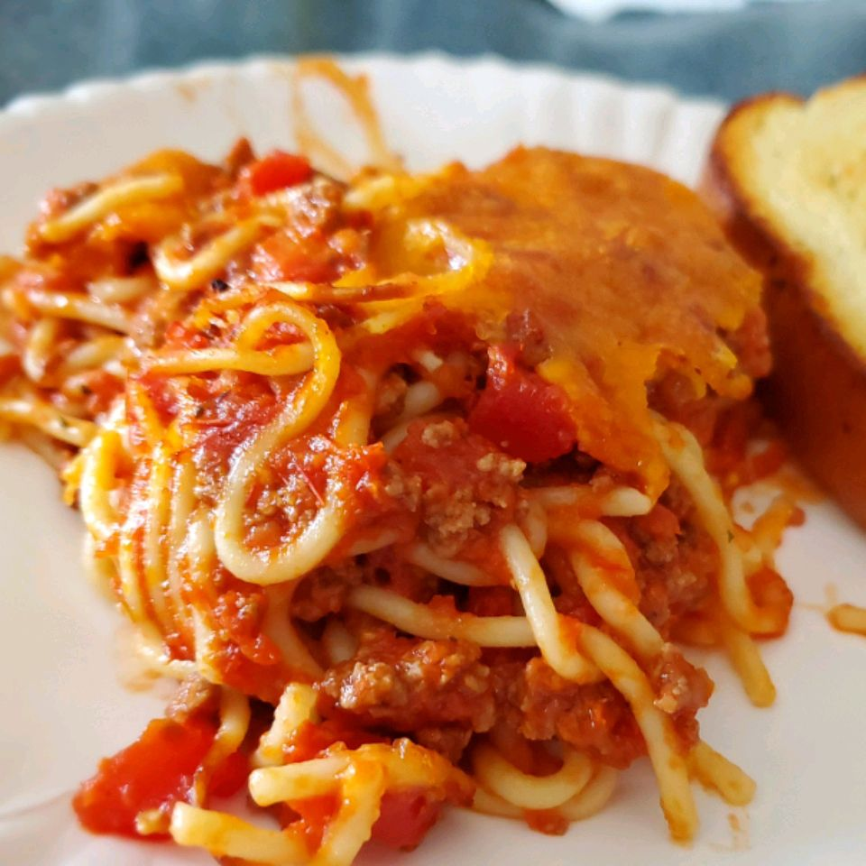

Spaghetti

What we have here is a recipe for a delicious spaghetti dish!
This spaghetti recipe is going to knock your socks off! Whether you're eating alone or
with many guests, you'll enjoy making this simple dish.
Go to the supermarket now and pick up the ingredients listed below:
Ingredients:
- 3/4 pound lean ground beef
- 1 (16 ounce) jar spaghetti sauce
- 1 pound spaghetti
- 1 cup shredded mild Cheddar cheese
Steps:
- Preheat the oven to 350 degrees F (175 degrees C).
- Cook beef in a large skillet over medium-high heat until crumbly and brown, 8 to 10 minutes. Stir spaghetti sauce into beef. Reduce heat and simmer.
- Meanwhile, bring a large pot of lightly salted water to a boil. Stir in spaghetti; cook until al dente, 8 to 10 minutes. Drain.
- Add spaghetti to meat mixture; mix well. Transfer to a 9x13-inch dish. Top with Cheddar cheese.
- Bake in the preheated oven until heated through and cheese is bubbly, about 30 minutes.